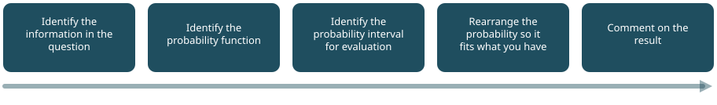
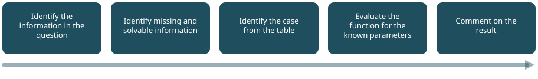
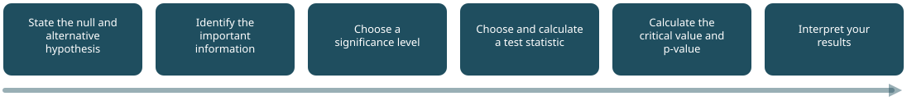

Three methods that cover almost everything
A method is a sequence of steps you can apply to a whole class of problems rather than working each one out from scratch. Learning these three is a better investment than memorising any individual answer.
1. Evaluating probability intervals
Useful from Tutorial 2 onwards.

- Identify the information in the question. Read carefully and write down the values and relationships you are given. Not everything in a question is relevant.
- Identify the probability function. Continuous measurement suggests the normal distribution; a fixed number of yes/no trials suggests the binomial; counts of events in a window suggest the Poisson.
- Identify the interval to evaluate. Write it down formally — P(X < 15), P(X > 10), P(a < X < b). Sketching it is not a waste of time.
- Rearrange it to fit what you have. Excel works from the left. Anything else has to be turned into a left-hand area first. This is the step that separates people who can do these questions from people who cannot.
- Comment on the result. Say what it means in plain language. If you cannot explain it to someone without statistics, you have not finished.
P(X > c) = 1 − P(X ≤ c)
P(a < X < b) = P(X < b) − P(X < a)
For discrete data, mind the boundary: P(X < 10) = P(X ≤ 9), which is not the same as P(X ≤ 10).
Worked example
A normal distribution has mean 0 and standard deviation 1. What is the probability that a value drawn from it is less than −2?
- Mean 0, standard deviation 1, value of interest −2.
- We are told it is normal, so
NORM.DIST. - P(X < −2).
- Already a left-hand area — no rearrangement needed.
=NORM.DIST(-2,0,1,TRUE)= 0.02275.
Comment: if a value is picked at random from this distribution, there is about a 2.3% chance it will be below −2.
2. Estimating intervals
Useful from Tutorial 3 onwards.

- Identify the information in the question. Confidence level, distribution, sample size. If no confidence level is given, pick a sensible one and say that you have.
- Identify missing but solvable information. The question will rarely hand you everything. The sample mean and standard deviation are usually derivable from the data.
- Identify the case from the table. See below.
- Evaluate the function. With the correct spread parameter — which is almost always the standard error, not the standard deviation.
- Comment on the result.
Which case applies?
| Case | Population normally distributed? | Population variance known? | Sample size | Use | Statistic |
|---|---|---|---|---|---|
| 1 | Yes | Yes | any | Inverse Normal CDF | (X̄ − μ) ÷ (σ/√n) ~ Nor(0,1) |
| 2 | No | Yes | n ≥ 20 | Inverse Normal CDF | (X̄ − μ) ÷ (σ/√n) ~ Nor(0,1) |
| 3 | Yes | No | any | Inverse t CDF | (X̄ − μ) ÷ (S/√n) ~ t(n−1) |
| 4 | No | No | n ≥ 30 | Inverse Normal CDF | (X̄ − μ) ÷ (S/√n) ~ Nor(0,1) |
| 4 | Roughly normal | No | n ≥ 20 | Inverse t CDF | (X̄ − μ) ÷ (S/√n) ~ t(n−1) |
Read the table as two questions:
- Do I know the population standard deviation? If yes, use σ. If no, estimate it from the sample and use S.
- Can I justify the normal distribution? Either because the population is normal, or because the sample is large enough for the central limit theorem. If neither, use t.
Worked example
A study of driving speed outside a school sampled 100 vehicles. The average speed was 25 mph with a standard deviation of 2 mph. Estimate a 95% confidence interval for the population mean.
- n = 100, mean 25, sd 2, 95% confidence so α = 0.05 and the tails are at 0.025 and 0.975.
- Nothing further to derive.
- We are not told the population is normal and we do not know its standard deviation, but n = 100 is large — Case 4, inverse normal.
- Standard error = 2 ÷ √100 = 0.2.
=NORM.INV(0.025, 25, 0.2)= 24.61
=NORM.INV(0.975, 25, 0.2)= 25.39
Comment: we can say with 95% confidence that the mean speed of vehicles passing this site is between 24.61 and 25.39 mph.
ERRATA.md.
3. Hypothesis testing
Useful from Tutorial 4 onwards.

- State the null and alternative hypothesis. H₀ is always the position of no change. Decide here whether the test is one- or two-tailed — two-tailed to detect a difference in any direction, one-tailed when the question names a direction.
- Identify the important information. Sample sizes, means, standard deviations. Tabulate them.
- Choose a significance level. If none is given, say which you are using. α = 0.05 corresponds to 95% confidence.
- Choose and calculate a test statistic. See the chooser on the reference page.
- Calculate the critical value and the p-value. Do both. They always agree, so disagreement means you have made an arithmetic slip.
- Interpret your results. In plain language, and without ever claiming to have proved H₀.
T.TEST and the Analysis ToolPak both need raw data ranges.
When a question gives you only n, the mean and the standard deviation,
you must build the test from cell arithmetic — which is what the
Hypothesis Test
Workbench does for you.
Worked example
Leeds council surveyed bus lateness in Leeds and Manchester. 64 buses in Leeds averaged 144 seconds late; 49 in Manchester averaged 121 seconds. The standard deviation was 49 seconds in both. Is the difference significant at 95% confidence?
- H₀: μ_L = μ_M. H₁: μ_L ≠ μ_M. Two-tailed, because no direction is specified.
- n_L = 64, n_M = 49, means 144 and 121, s = 49 for both.
- 95% confidence, so α = 0.05, split as 0.025 per tail.
- Two independent groups with an unknown population sd — a
two-sample t-test.
t = (144 − 121) ÷ (49 × √(1/64 + 1/49)) = 23 ÷ 9.30 = 2.473
df = 64 + 49 − 2 = 111 =T.INV.2T(0.05, 111)= 1.98- 2.473 > 1.98, so reject H₀.
Comment: there is evidence that bus lateness differs significantly between the two cities. Note what has not been shown: nothing here explains why, and nothing licenses the claim that one city's buses are better run.
Which test do I need?
| Situation | Test | Conditions |
|---|---|---|
| One sample vs a known population mean, σ known | One-sample z | Population sd known |
| One sample vs a hypothesised mean, σ unknown | One-sample t | Roughly normal, independent observations |
| Two independent groups, σ known or n large | Two-sample z | Normal populations, or large enough for the CLT |
| Two independent groups, σ unknown | Two-sample t | Independent, roughly normal, similar variances |
| Same subjects measured twice | Paired t | Differences roughly normal, pairs independent |
| Two categorical variables | Chi-squared | Independent observations, every expected value ≥ 5 |
| More than two independent groups | ANOVA | Independent, normal residuals, equal variances |
| Strength of a linear relationship | Correlation | Two continuous variables |
The central limit theorem is what makes several of these work: for a large enough sample from almost any population, the distribution of the sample means is approximately normal. It is why "n is large" can stand in for "the population is normal".